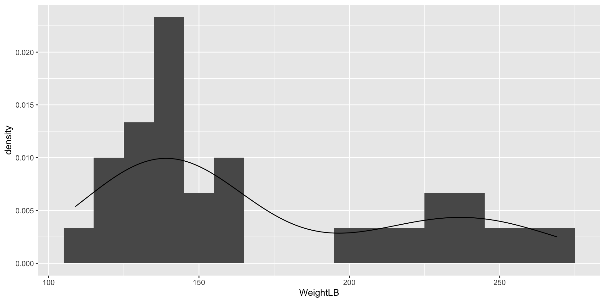
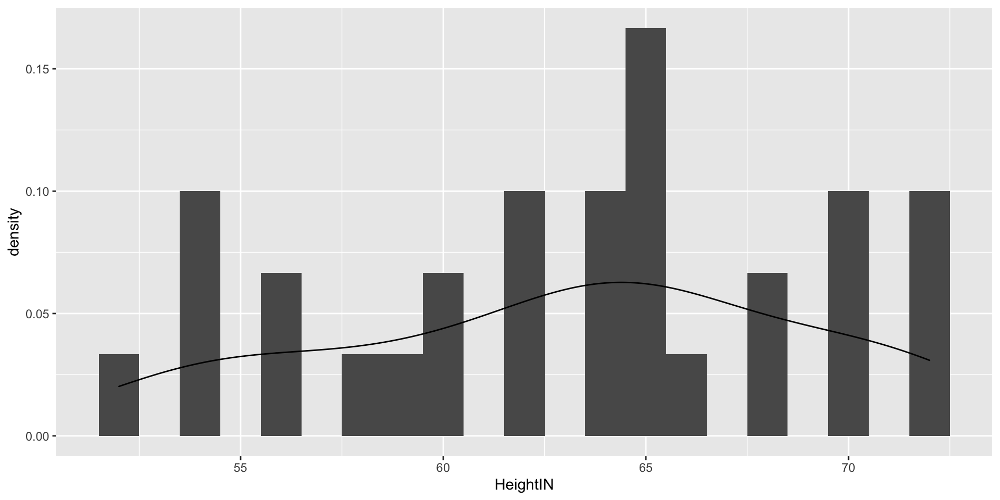
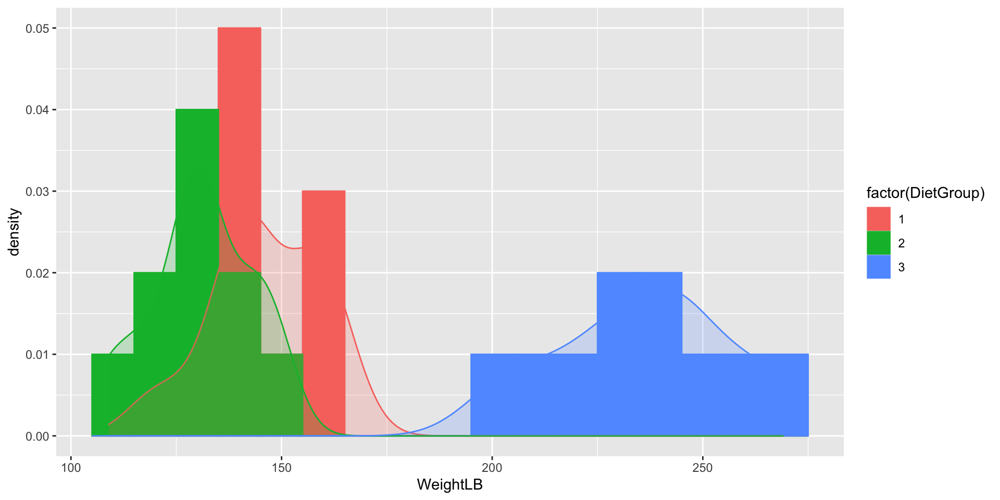
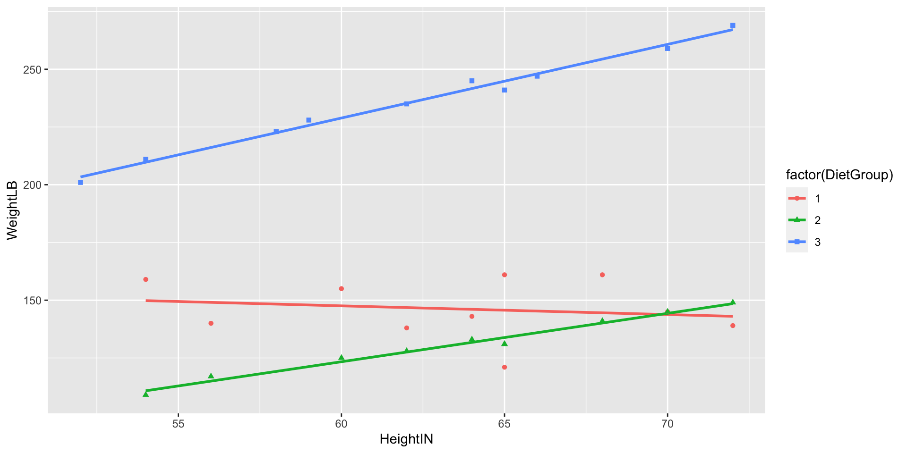
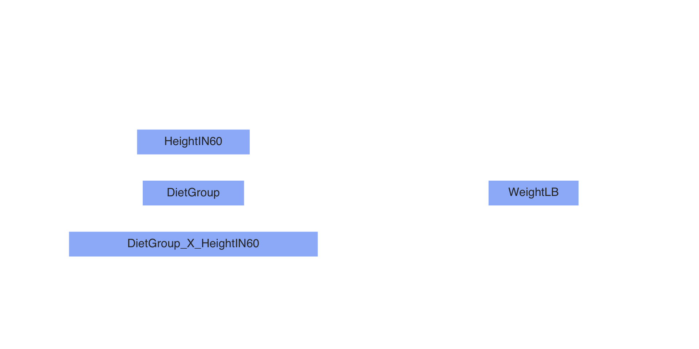
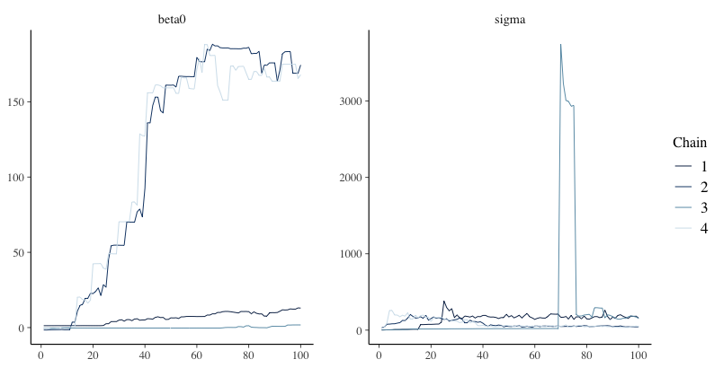

Markov Chain Monte Carlo and Stan
Lecture 3
Today’s Lecture Objectives
- An Introduction to MCMC
- An Introduction to Stan
- Both with Linear Models
The Markov Chain Timeseries

The Posterior Distribution

Markov Chain Monte Carlo Estimation
Bayesian analysis is all about estimating the posterior distribution
- Up until now, we have worked with posterior distributions that fairly well-known
- Beta-Binomial had a Beta distribution
- In general, likelihood distributions from the exponential family have conjugate priors
- Conjugate prior: the family of the prior is equivalent to the family of the posterior
- Most of the time, however, posterior distributions are not easily obtainable
- No longer able to use properties of the distribution to estimate parameters
- It is possible to use an optimization algorithm (e.g., Newton-Raphson or Expectation-Maximization) to find maximum value of posterior distribution
- But, such algorithms may take a very long time for high-dimensional problems
- Instead: “sketch” the posterior by sampling from it – then use that sketch to make inferences
- Sampling is done via MCMC
Markov Chain Monte Carlo Estimation
- MCMC algorithms iteratively sample from the posterior distribution
- For fairly simplistic models, each iteration has independent samples
- Most models have some layers of dependency included
- Can slow down sampling from the posterior
- There are numerous variations of MCMC algorithms
- Most of these specific algorithms use one of two types of sampling:
- Direct sampling from the posterior distribution (i.e. Gibbs sampling)
- Often used when conjugate priors are specified
- Indirect (rejection-based) sampling from the posterior distribution (e.g., Metropolis-Hastings, Hamiltonian Monte Carlo)
- Direct sampling from the posterior distribution (i.e. Gibbs sampling)
- Most of these specific algorithms use one of two types of sampling:
MCMC Algorithms
- Efficiency is the main reason for so many algorithms
- Efficiency in this context: How quickly the algorithm converges and provides adequate coverage (“sketching”) of the posterior distribution
- No one algorithm is uniformly most efficient for all models (here model = likelihood \(\times\) prior)
- The good news is that many software packages (stan, JAGS, MPlus, especially) don’t make you choose which specific algorithm to use
- The bad news is that sometimes your model may take a large amount of time to reach convergence (think days or weeks)
- You can also code your own custom algorithm to make things run smoother
Commonalities Across MCMC Algorithms
- Despite having fairly broad differences regarding how algorithms sample from the posterior distribution, there are quite a few things that are similar across algorithms:
- A period of the Markov chain where sampling is not directly from the posterior
- The burnin period (sometimes coupled with other tuning periods and called warmuup)
- Methods used to assess convergence of the chain to the posterior distribution
- Often involving the need to use multiple chains with independent and differing starting values
- Summaries of the posterior distribution
- A period of the Markov chain where sampling is not directly from the posterior
- Further, rejection-based sampling algorithms often need a tuning period to make the sampling more efficient
- The tuning period comes before the algorithm begins its burnin period
MCMC Demonstration
- To demonstrate each type of algorithm, we will use a model for a normal distribution
- We will investigate each, briefly
- We will then switch over to stan to show the syntax and let stan work
- We will conclude by talking about assessing convergence and how to report parameter estimates.
Example Data: Post-Diet Weights
Example Data: https://stats.idre.ucla.edu/spss/library/spss-libraryhow-do-i-handle-interactions-of-continuous-andcategorical-variables/
The file DietData.csv contains data from 30 respondents who participated in a study regarding the effectiveness of three types of diets.
Variables in the data set are:
- Respondent: Respondent number 1-30
- DietGroup: A 1, 2, or 3 representing the group to which a respondent was assigned
- HeightIN: The respondent’s height in inches
- WeightLB (the Dependent Variable): The respondent’s weight, in pounds, recorded following the study
The research question: Are there differences in final weights between the three diet groups, and, if so, what are the nature of the differences?
But first, let’s look at the data
Visualizing Data: WeightLB Variable
Visualizing Data: HeightIN Variable
Visualizing Data: WeightLB by Group
Visualizing Data: Weight by Height by Group
Class Discussion: What Do We Do?
Now, your turn to answer questions:
- What type of analysis seems most appropriate for these data?
- Is the dependent variable (
WeightLB) is appropriate as-is for such analysis or does it need transformed?
Linear Model with Least Squares
Let’s play with models for data…
# center predictors for reasonable numbers
DietData$HeightIN60 = DietData$HeightIN-60
# full analysis model suggested by data:
FullModel = lm(formula = WeightLB ~ 1, data = DietData)
# examining assumptions and leverage of fit
# plot(FullModel)
# looking at ANOVA table
# anova(FullModel)
# looking at parameter summary
summary(FullModel)
Call:
lm(formula = WeightLB ~ 1, data = DietData)
Residuals:
Min 1Q Median 3Q Max
-62.00 -36.75 -24.00 49.00 98.00
Coefficients:
Estimate Std. Error t value Pr(>|t|)
(Intercept) 171.000 9.041 18.91 <2e-16 ***
---
Signif. codes: 0 '***' 0.001 '**' 0.01 '*' 0.05 '.' 0.1 ' ' 1
Residual standard error: 49.52 on 29 degrees of freedomPath Diagram of Our Model
Steps in an MCMC Analysis
- Specify model
- Specify prior distributions for all model parameters
- Build model syntax as needed
- Run Markov chains (specify warmup/burnin and sampling period lengths)
- Evaluate chain convergence
- Interpret/report results
Specify Model
- To begin, let’s start with an empty model and build up from there
- Let’s examine the linear model we seek to estimate:
\[\text{WeightLB}_p = \beta_0 + e_p,\]
Where: \(e_p \sim N(0, \sigma^2_e)\)
Questions:
- What are the variables in this analysis?
- What are the parameters in this analysis?
Introduction to Stan
- Stan is an MCMC estimation program
- Most recent; has many convenient features
- Actually does severaly methods of estimation (ML, Variational Bayes)
- You create a model using Stan’s syntax
- Stan translates your model to a custom-built C++ syntax
- Stan then compiles your model into its own executable program
- You then run the program to estimate your model
- If you use R, the interface can be seamless
Stan and RStudio
- Stan has its own syntax which can be built in stand-alone text files
- Rstudio will let you create one of these files in the new file menu
- Rstudio also has syntax highlighting in Stan files
- This is very helpful to learn the syntax
- Stan syntax can also be built from R character strings
- Which is helpful when running more than one model per analysis

Stan Syntax
- Above is the syntax for our model
- Each line ends with a semi colon
- Comments are put in with //
- Three blocks of syntax needed
- Data: What Stan expects you will send to it for the analysis (using R lists)
- Parameters: Where you specify what the parameters of the model are
- Model: Where you specify the distributions of the priors and data
Stan Data and Parameter Delcaration
Like many compiled languages, Stan expects you to declare what type of data/parameters you are defining:
int: Integer values (no decimals)real: Floating point numbersvector: A one-dimensional set of real valued numbers
Sometimes, additional definitions are provided giving the range of the variable (or restricting the set of starting values):
real<lower=0> sigma;
See: https://mc-stan.org/docs/reference-manual/data-types.html for more information
Stan Data and Prior Distributions
- In the model section, you define the distributions needed for the model and the priors
- The left-hand side is either defined in data or parameters
y ~ normal(beta0, sigma); // model for observed datasigma ~ uniform(0, 100000); // prior for sigma
- The right-hand side is a distribution included in Stan
- You can also define your own distributions
- The left-hand side is either defined in data or parameters
See: https://mc-stan.org/docs/functions-reference/index.html for more information
From Stan Syntax to Compilation
- Once you have your syntax, next you need to have Stan translate it into C++ and compile an executable
- This is where
cmdstanrandrstandiffercmdstanrwants you to compile first, then run the Markov chainrstanconducts compilation (if needed) then runs the Markov chain
Building Data for Stan
- Stan needs the data you declared in your syntax to be able to run
- Within R, we can pass this data to Stan via a list object
- The entries in the list should correspond to the data portion of the Stan syntax
- In the above syntax, we told Stan to expect a single integer named
Nand a vector namedy
- In the above syntax, we told Stan to expect a single integer named
- The R list object is the same for
cmdstanrandrstan
Running Markov Chains in cmdstanr
- With the compiled program and the data, the next step is to run the Markov Chain (a process sometimes called sampling as you are sampling from a posterior distribution)
- In
cmdstanr, running the chain comes from the$sample()function that is a part of the compiled program object - You must specify:
- The data
- The random number seed
- The number of chains (and parallel chains)
- The number of warmup iterations (more detail shortly)
- The number of sampling iterations
Running Markov Chains in rstan
- Rstan takes the model syntax directly, then compiles and runs the chains
- The first two lines of syntax enable running one chain per thread (parallel processing)
- As chains are independent, running them simultaneously (parallel) shortens wait time considerably
- The
verboseoption is helpful for detecting when things break - The same R list supplies the data to Stan
MCMC Process
- The MCMC algorithm runs as a series of discrete iterations
- Within each iteration, each parameter of a model has an opportunity to change its value
- For each parameter, a new parameter is sampled at random from the current belief of posterior distribution
- The specifics of the sampling process differ by algorithm type (we’ll have a lecture on this later)
- In Stan (Hamiltonian Monte Carlo), for a given iteration, a proposed parameter is generated
- The posterior likelihood “values” (more than just density; includes likelihood of proposal) are calculated for the current and proposed values of the parameter
- The proposed values are accepted based on the draw of a uniform number compared to a transition probability
- If all models are specified correctly, then regardless of starting location, each chain will converge to the posterior if run long enough
- But, the chains must be checked for convergence when the algorithm stops
Example of Bad Convergence
Examining Chain Convergence
- Once Stan stops, the next step is to determine if the chains converged to their posterior distribution
- Called convergence diagnosis
- Many methods have been developed for diagnosing if Markov chains have converged
- Two most common: visual in spection and Gelman-Rubin Potential Scale Reduction Factor (PSRF; quick reference)
- Visual inspection
- Want no trends in timeseries – should look like a catapillar
- Shape of posterior density should be mostly smooth
- Gelman-Rubin PSRF (denoted with \(\hat{R}\))
- For analyses with multiple chains
- Ratio of between-chain variance to within-chain variance
- Should be near 1 (maximum somewhere under 1.1)
Setting MCMC Options
- As convergence is assessed using multiple chains, more than one should be run
- Between-chain variance estimates improve with the number of chains, so I typically use four
- Others have two; more than one should work
- Warmup/burnin period should be long enough to ensure chains move to center of posterior distribution
- Difficult to determine ahead of time
- More complex models need more warmup/burnin to converge
- Sampling iterations should be long enough to thoroughly sample posterior distribution
- Difficulty to determine ahead of time
- Need smooth densities across bulk of posterior
- Often, multiple analyses (with different settings) is what is needed
The Markov Chain Timeseries
The Posterior Distribution
Assessing Our Chains
# A tibble: 3 × 10
variable mean median sd mad q5 q95 rhat ess_bulk ess_tail
<chr> <dbl> <dbl> <dbl> <dbl> <dbl> <dbl> <dbl> <dbl> <dbl>
1 lp__ -129. -128. 1.03 0.737 -131. -128. 1.00 17204. 21369.
2 beta0 171. 171. 9.52 9.40 155. 187. 1.00 26136. 23619.
3 sigma 51.8 51.0 7.25 6.89 41.5 64.9 1.00 25343. 23597.- The summary function reports the PSRF (rhat)
- Here we look at our two parameters: \(\beta_0\) and \(\sigma\)
- Both have \(\hat{R}=1.00\), so both would be considered converged
lp__is posterior log likelihood–does not necessarily need examinedess_columns show effect sample size for chain (factoring in autocorrelation between correlations)- More is better
Results Interpretation
- At long last, with a set of converged Markov chains, we can now interpret the results
- Here, we disregard which chain samples came from and pool all sampled values to use for results
- We use summaries of posterior distributions when describing model parameters
- Typical summary: the posterior mean
- The mean of the sampled values in the chain
- Called EAP (Expected a Posteriori) estimates
- Less common: posterior median
- Typical summary: the posterior mean
- Important point:
- Posterior means are different than what characterizes the ML estimates
- Analogous to ML estimates would be the mode of the posterior distribution
- Especially important if looking at non-symmetric posterior distributions
- Look at posterior for variances
- Posterior means are different than what characterizes the ML estimates
Results Interpretation
- To summarize the uncertainty in parameters, the posterior standard deviation is used
- The standard deviation of the sampled values in the chain
- This is the analogous to the standard error from ML
- Bayesian credible intervals are formed by taking quantiles of the posterior distribution
- Analogous to confidence intervals
- Interpretation slightly different – the probability the parameter lies within the interval
- 95% credible interval notes that parameter is within interval with 95% confidence
- Additionally, highest density posterior intervals can be formed
- The narrowest range for an interval (for unimodal posterior distributions)
Our Results
# A tibble: 3 × 10
variable mean median sd mad q5 q95 rhat ess_bulk ess_tail
<chr> <dbl> <dbl> <dbl> <dbl> <dbl> <dbl> <dbl> <dbl> <dbl>
1 lp__ -129. -128. 1.03 0.737 -131. -128. 1.00 17204. 21369.
2 beta0 171. 171. 9.52 9.40 155. 187. 1.00 26136. 23619.
3 sigma 51.8 51.0 7.25 6.89 41.5 64.9 1.00 25343. 23597. lower upper
154.917 186.013
attr(,"credMass")
[1] 0.9 lower upper
40.3082 63.1433
attr(,"credMass")
[1] 0.9The Posterior Distribution
Wrapping Up
- This lecture covered the basics of MCMC estimation with Stan
- Next we will use an example to show a full analysis of the data problem we started with today
- The details today are the same for all MCMC analyses, regardless of which algorithm is used